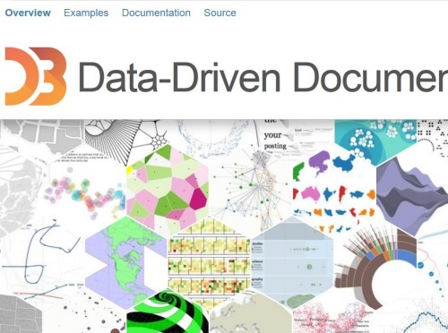
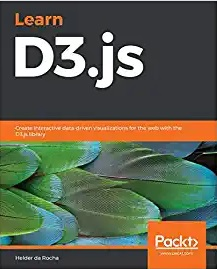
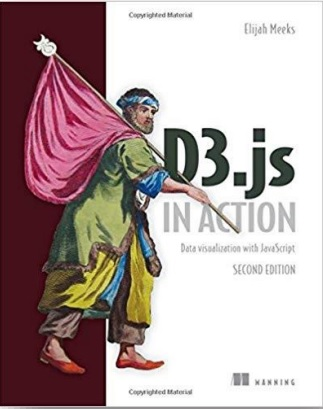

Introduction
F20DV/F21DV Data Visualization and Analytics
2020-2021
Overview
- What this Course is about?
- What is the Syllabus?
- What are the Learning Outcomes?
- What is the Assessment Criteria?
- Timetabled Labs & Lessons
- FAQ about Course/Studying
- Questions Discussion
Timetable
1 x Lectures
1 x Tutorial
1 x Lab/Revision
Attendance is Optional
Slide Features
 Home (Table of Contents)
Home (Table of Contents)  Print Slides
Print Slides  JSitor (JS Editor)
JSitor (JS Editor)  D3 Gallary/Library Examples
D3 Gallary/Library Examples  LiveWeave (Collaborative JS)
LiveWeave (Collaborative JS)  WebMakerApp (JS Editor)
WebMakerApp (JS Editor)
Course Material
Easily accessible and structured on GitHub
(Note you'll still submit your coursework on CANVAS)
Example
What is the best way to master the subject?
Practice, practice, practice
Hands-on
Typing examples, experimenting, trying,


Learn D3.js: Create interactive data-driven visualizations for the web with the D3.js library
Helder da Rocha
Helder da Rocha
D3.js In Action
Author: Elijah Meeks
Author: Elijah Meeks

Summary
• Understand What this Course is About
• How it is Assessed
• How you should work through the material on this course
• Hands-on Course (Work through Examples/Exercises)
To do this week ...
• Read over the lectures
• Review the revision questions
• Work through tutorial practicals
• Challenging – so start early
• Experiment (get into good habits)